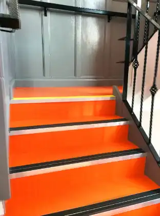
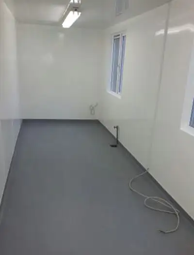
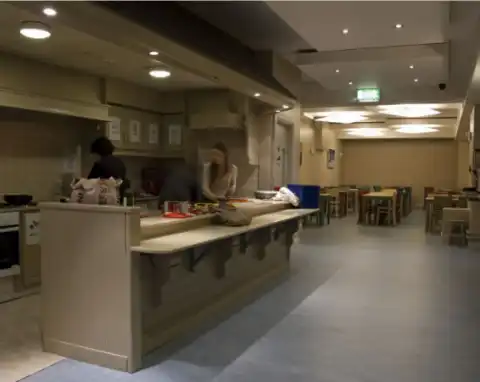

Floors built to take the traffic.
Commercial, industrial and high-end domestic flooring from Limerick, fitted throughout Ireland since 1982. Schools, hospitals, retailers, hotels and contractors trust us to get it right the first time.
- 1982Fitting floors since
- AltroWhiterock premier installer
- NationwideBased in Limerick

What we fit
Specialist advice, careful preparation and efficient project management on every job, big or small.
-
Commercial
Hard-wearing vinyl, rubber and carpet tiles for offices, schools and public buildings. Logos and custom designs can be worked into the floor.
-
Industrial
High-performance and seamless systems, laid on properly prepared surfaces with modern preparation equipment.
-
Safety
Slip-resistant vinyl for kitchens, canteens, toilets and clinics, installed to the manufacturer's specification.
-
Retail
Floors that carry a brand and a crowd. Part of the fit-out team for Elverys Sports stores nationwide.
-
Sports
Sports and play surfaces that stand up to daily use, from halls to indoor play centres.
-
Domestic
High-end home flooring from leading brands including Amtico, Marmoleum and Altro.
-
Repairs
From a damaged section to a full refit, we repair existing floors so they last.
Products we supply and install: safety flooring, Altro Whiterock wall cladding, wood flooring, Rust-Oleum epoxy floors, vinyl, heavy-duty linoleum, carpet tiles and Marmoleum.
Before and after
Tralee Army Barracks: an old, worn floor stripped back, levelled and replaced. Drag the handle to compare.


I had 48 tradesmen on site and I can honestly say Tom Walsh and his staff were by far the most helpful, hardworking and reliable.
Trusted by
Schools, colleges, hospitals, care homes, retailers and the public sector. Most of our work comes from referrals.
- HSE
- Office of Public Works
- Limerick Institute of Technology
- Irish Aviation Authority
- Aer Rianta
- Daughters of Charity
- Elverys Sports
- SISK
- Hochtief
From general floor maintenance to complete re-fits to new builds, Tom Walsh Flooring has supplied us with all our flooring needs over the past 10 years.
Without question worthy of the title of market leader for workmanship, product selection and the ability to deliver on time and within budget.
Get a free flooring quote.
Tell us about the space and what it is used for. Tom will advise on the right floor and come back to you with a clear price.
- Phone
- 087 266 6100
- Address
- Unit 69 East Link Business Park
Ballysimon Road, Limerick